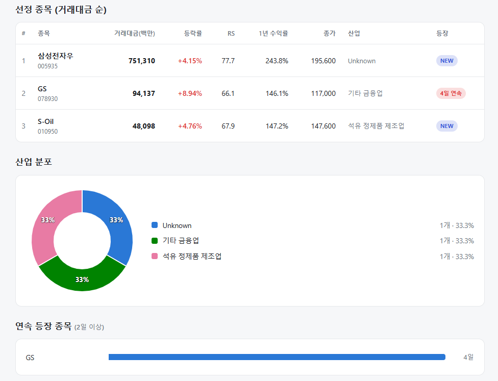
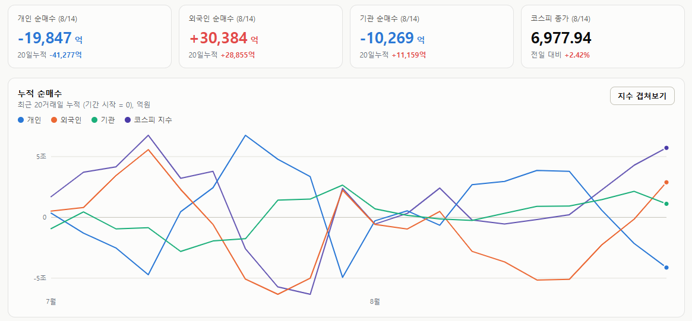
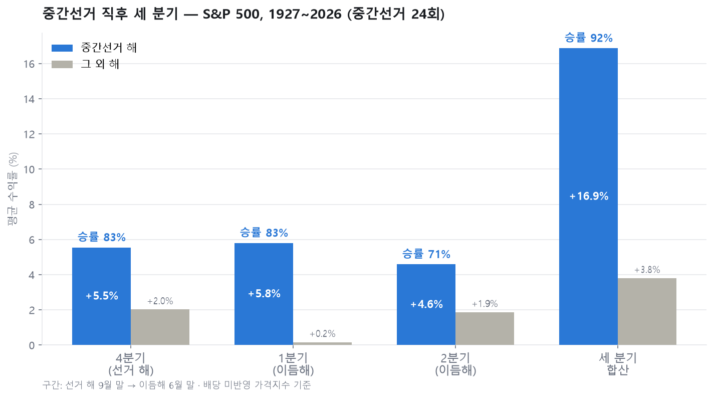
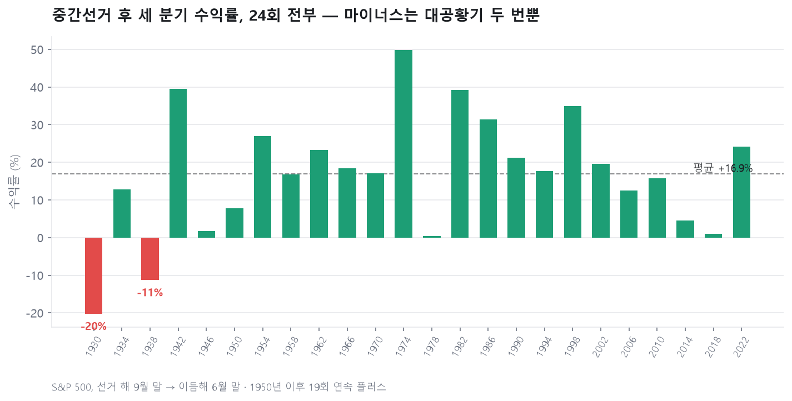

매일의 주도주 정리를 위해 기록합니다.
연속적으로 나온 종목들 또는 상승 후 조정받는 종목 위주로 리서치 해보시면 좋을 것 같습니다.

*오늘의 퀀트픽 종목은 없습니다.
연속 종목으로는 GS(4회) 출현했습니다.
최근 에너지주들이 정유와 윤활유 정제마진 개선으로 좋은 흐름 보이고 있네요.
#주도섹터
자동차·무선통신 및 대형 IT (외인 패시브 주도)
주요 종목: SK텔레콤(+10.32%), 현대차(+8.24%), 현대차2우B(+5.71%), 삼성전자우(+4.15%), 삼성전자(+2.43%), SK하이닉스(+3.26%), 삼성전기(+3.66%).
분석: 무선통신서비스 업종이 +8.49%, 자동차 업종이 +6.20% 상승했습니다. 외인 매수세가 집중되며 SK텔레콤과 현대차가 급등했고, 대형 테크 우선주인 삼성전자우(+4.15%, 거래대금 7,513억 원, RS 77.7)가 막대한 거래대금을 흡수하며 강세를 나타냈습니다.
정유·석유가스 및 웹툰·보험 (실적 및 저PBR 팩터)
주요 종목: 수성웹툰(+29.98% 상한가), 탑코미디어(+17.76%), 한화생명(+11.93%), 미래에셋생명(+7.75%), GS(+8.94%), SK(+5.79%), SK이노베이션(+5.75%), S-Oil(+4.76%), 알트(+29.98% 상한가).
분석: 정유 테마(+6.48%), 석유와가스 업종(+5.84%), 웹툰 테마(+5.44%), 생명보험 테마(+5.43%)가 동반 강세를 나타냈습니다. 지정학적 리스크 및 정제마진 개선으로 GS(+8.94%, 거래대금 941억 원, RS 66.1)가 4일 연속 강세를 보였고, S-Oil(+4.76%, 거래대금 481억 원, RS 67.9) 및 SK이노베이션(+5.75%) 등 정유 대형주로 수급이 확대되었습니다.
#조정섹터
개별 관리종목 우려 품목
주요 종목: 시스웍(-37.04%)
분석: 전반적인 지수 랠리 속에서, 동전주 및 시총 미달 상장폐지/관리종목 우려가 부각된 시스웍(-37.04%) 등 개별 한계 기업에서 대규모 투매 물량이 발생했습니다.
#수급동향

코스피 지수는 +2.42% 상승한 6,977.94로 마감하며 7,000선에 바짝 다가섰습니다. 코스닥 지수는 +0.38% 상승한 864.65로 마감했습니다.
유가증권시장에서 외국인 투자자가 3조 384억 원을 순매수하며 20거래일 누적 순매수를 +2조 8,855억 원으로 대폭 양전시켰습니다. 반면 개인 투자자는 1조 9,847억 원(20일 누적 -4조 1,277억 원), 기관 투자자는 1조 269억 원(20일 누적 +1조 1,159억 원)을 각각 순매도하며 차익 실현에 나섰습니다.
15거래일 만에 '7천피'를 재탈환하는 과정에서 외국인 패시브 자금의 전방위적 유입이 전개되었으며, 대형 반도체 및 자동차, 통신, 정유 대표주 전반으로 밸류에이션 리레이팅이 확산되었습니다.
중간선거가 지나면 시장은 왜 편안해지는가
올해 11월, 미국 중간선거가 있습니다. 과거 100년의 데이터는 이 이벤트 직후의 세 분기에 대해 꽤 분명한 이야기를 들려줍니다.
숫자부터 보겠습니다. S&P 500 지수로 1927년부터 중간선거 24번을 전부 세어본 결과입니다. 선거가 있는 해의 4분기부터 이듬해 2분기까지, 세 분기의 성적은 이렇습니다.

선거 해 4분기가 평균 +5.5%에 승률 83%, 이듬해 1분기가 +5.8%에 83%, 2분기가 +4.6%에 71%입니다. 세 분기를 합치면 평균 +16.9%, 승률 92%입니다. 같은 구간을 선거 없는 해와 비교하면 평균 +3.8%, 승률 62%에 그칩니다. 차이는 13%포인트가 넘고, 통계적으로도 우연으로 보기 어려운 수준입니다.
세 분기 합산이 마이너스였던 것은 24번 중 단 두 번 — 1930년과 1938년, 둘 다 대공황의 한복판이었습니다. 1950년 이후로만 보면 19번 중 19번, 한 번도 빠짐없이 플러스였습니다. 평균 +20%입니다.

왜 이런 일이 반복될까요. 켄 피셔가 이 패턴을 오래 추적하며 내놓은 설명이 설득력 있습니다.
대통령의 임기 전반부는 힘이 가장 셀 때입니다. 여당의 지원 속에 공약을 밀어붙이고, 행정명령과 입법이 쏟아집니다. 시장 입장에서 이것은 곧 불확실성입니다. 세금이 바뀔지, 규제가 생길지, 산업 지형이 흔들릴지 — 방향과 무관하게 "무언가 크게 바뀔 수 있다"는 상태 자체가 리스크로 값이 매겨집니다.
그런데 중간선거는 역사적으로 거의 예외 없이 집권당의 의석을 깎습니다.야당이 의회에서 힘을 얻으면 대통령의 정책은 승인받기 어려워지고, 밀어붙이던 어젠다는 교착에 빠집니다. 정치인에게 교착은 답답한 일이지만, 시장에게는 "당분간 큰 게 안 바뀐다"는 확정 신호입니다. 불확실성이라는 할인 요인이 사라지면서 주가가 그만큼을 되찾는다는 것이 피셔의 논리입니다. 강세가 선거 결과가 확정되는 4분기부터 곧바로 시작된다는 점도 이 설명과 잘 맞습니다.
유의할 점도 있습니다.
첫째, 이것은 확률이지 보장이 아닙니다. 92%의 반대편에는 대공황이라는 8%가 있습니다.
둘째, 도착지가 플러스라는 것이지 경로가 편하다는 뜻은 아닙니다. 가까운 예로 2018년 중간선거 직후에는 시장이 두 달 만에 10% 밀렸고, 그 구간을 견딘 사람만 이듬해의 반등을 가져갔습니다. 셋째, 표본은 24개입니다. 통계로는 충분히 강하지만, 물리법칙은 아닙니다.
그래도 결론은 단순합니다. 역사가 말해주는 한, 중간선거 이후의 세 분기는 주식을 들고 있기에 확률적으로 가장 유리했던 구간이었습니다. 올해 4분기가 그 시작점입니다.
한주도 수고 많으셨습니다. 즐거운 주말 보내세요:)